Millet grain is another cereal and the final food for analysis. Millet is most common in Asia and Africa with 97% of all millet production. For this data set prices are for Africa.
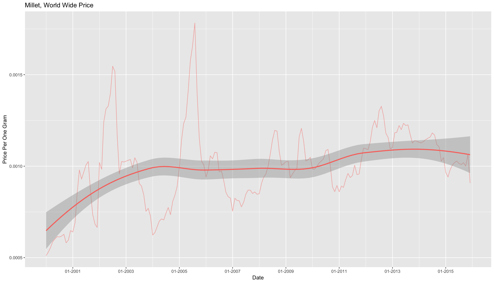
Over the last few years millet has had a lot of fluctuation in price, but overall the average has stayed around $0.0010.
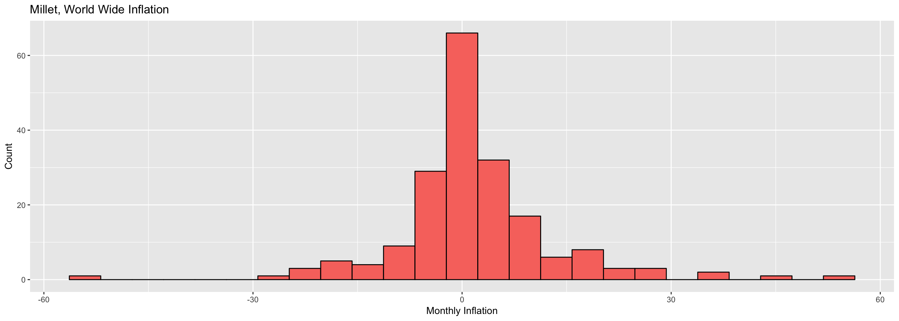
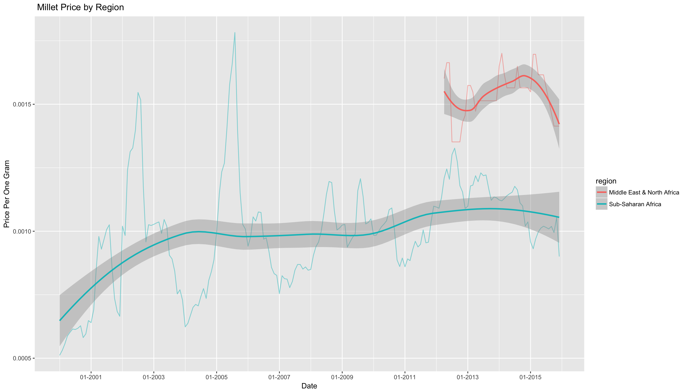
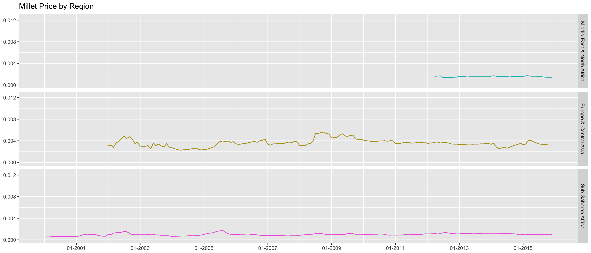
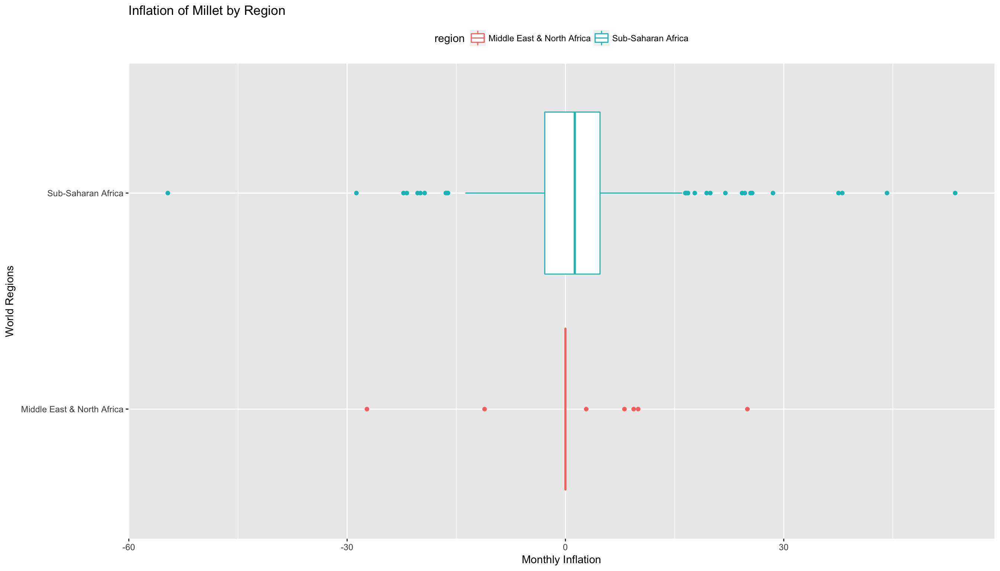
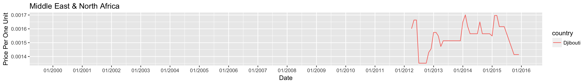 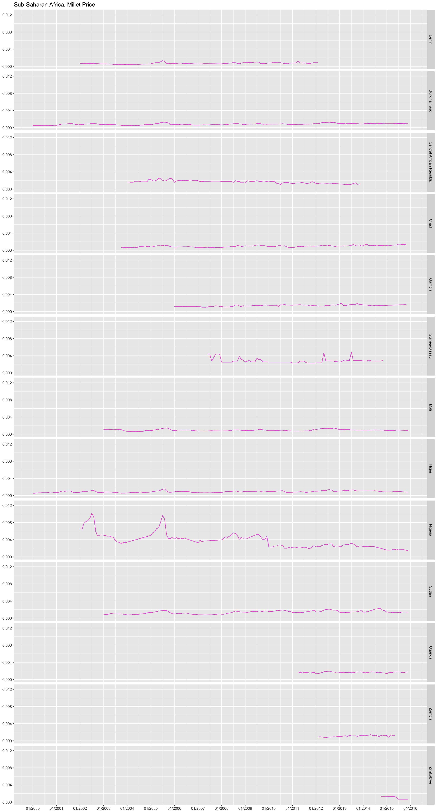
Variation in price is low from country to country. The most expensive countries once again are Nigeria and Guinea-Bissau.
There is symmetric inflation in every country but Chad, where there is a much wider histogram. Chad is ranked as one of the poorest nations in the world with 55% of its 11.2 million citizens living below the poverty line and 36% living in extreme poverty World Bank. Additionally in the 2010 United Nations Development Program’s Human Development Index, measuring a countries standard of living, Chad ranks 163th out of 169 countries. This explains food insecurities like famine and inflation.
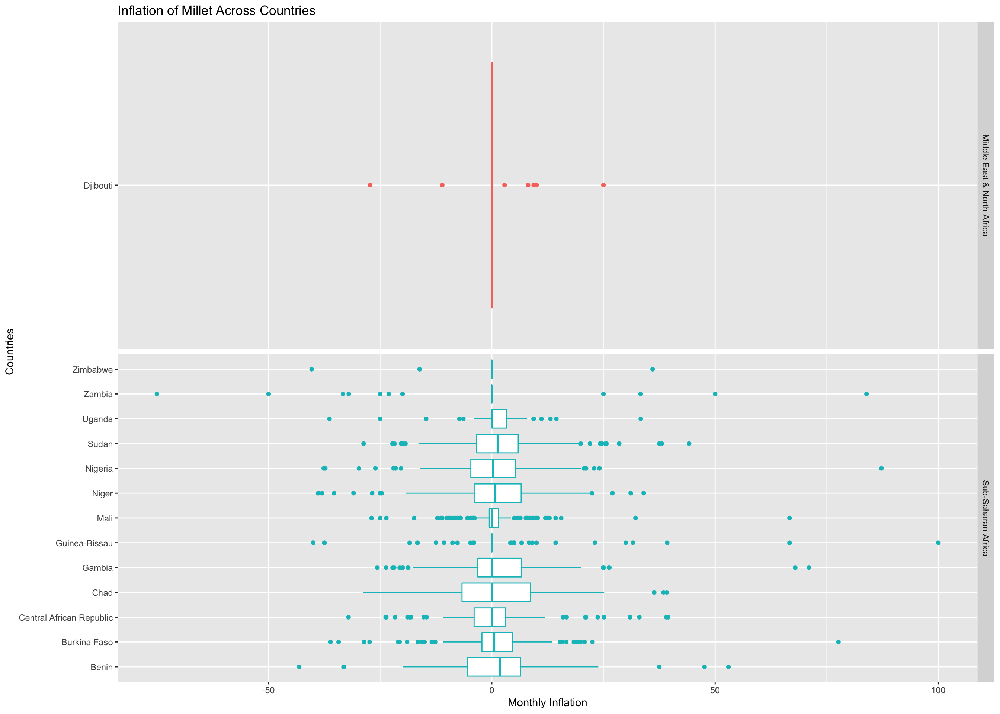 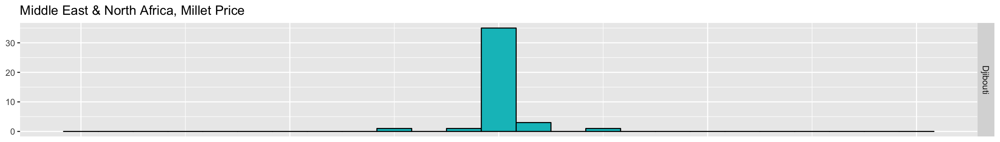 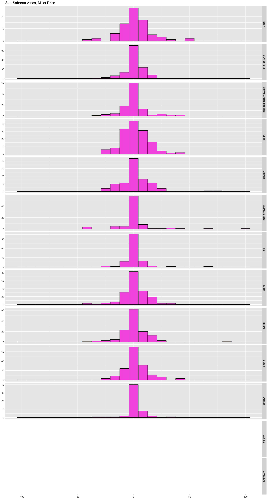
| country | avg_infla | stdev |
|---|---|---|
| Zimbabwe | 12.0148779 | 50.973801 |
| Zambia | 4.1254475 | 29.801123 |
| Sudan | 1.6530708 | 14.348259 |
| Gambia | 1.5656368 | 18.600351 |
| Benin | 1.4464708 | 14.920635 |
| Chad | 1.3965865 | 16.877358 |
| Guinea-Bissau | 1.0509179 | 17.643381 |
| Uganda | 0.9478526 | 11.981862 |
| Nigeria | 0.8211513 | 13.684771 |
| Niger | 0.7882611 | 12.112014 |
| Burkina Faso | 0.6447310 | 10.796807 |
| Senegal | 0.5721859 | 10.712976 |
| Mali | 0.5089092 | 10.259774 |
| Central African Republic | 0.4031960 | 11.283500 |
| Djibouti | 0.1320281 | 9.819589 |
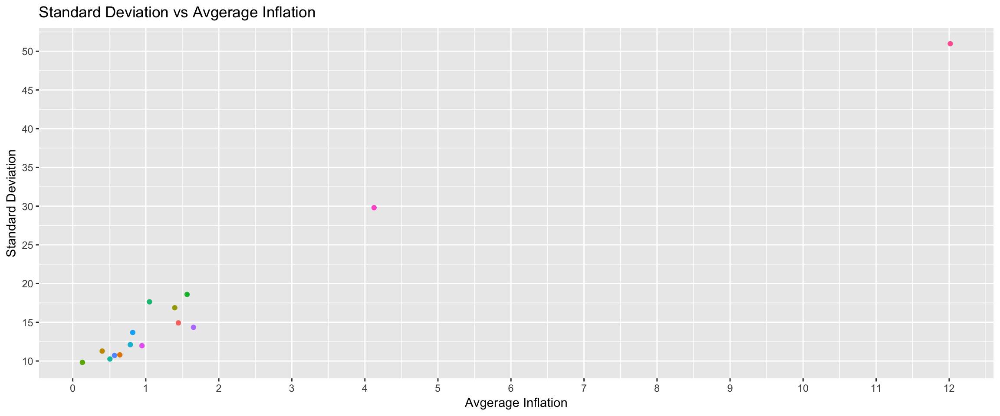